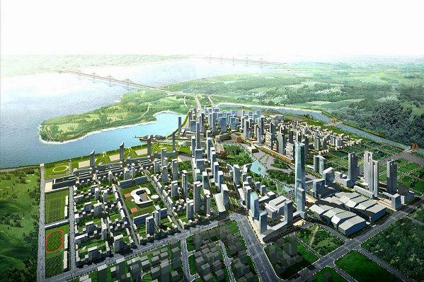

Fonte: Site Planet Smart City - Referência: https://www.planetsmartcity.com.br/sustentabilidade/
As cidades verdes são espaços urbanos resilientes, autossuficientes e sustentáveis que buscam melhoria na qualidade de vida da população.
O conceito engloba os pilares da sustentabilidade, em que o ambiental, o social e o econômico devem ser preservados para não prejudicar as futuras gerações. Desse modo, as cidades seriam capazes de suportar as atividades exercidas e ao mesmo tempo manter a qualidade de vida dos habitantes.
Veja a seguir um exemplo da cidade Fujisawa localizada na província de Kanagawa, Japão
Fonte: Blog Life Curiosa - Referência: https://lifecuriosa.blogspot.com/2017/10/a-cidade-verde-inteligente-do-japao.html
As cidades verdes são locais onde as pessoas querem viver e trabalhar, agora e no futuro. Elas atendem as necessidades dos residentes, integram-se bem ao meio ambiente e contribuem com uma elevada qualidade de vida, por meio de segurança, inclusão, bom planejamento, igualdade e bons serviços para todos.
Avançar no desenvolvimento sustentável significa fazer um uso mais racional de nossos recursos naturais, com consumo de energias renováveis, redução de poluentes e resíduos, além da proteção ambiental. É necessário que haja investimento público e privado constante para prover iniciativas sustentáveis e melhor distribuição de renda. Uma cidade verde também deve ser uma cidade mais justa para seus habitantes. Para isso, o lado social deve ser mais equilibrado, com melhor qualidade de vida, acesso à saúde e criação de oportunidades de educação e emprego.
Para caminhar para uma cidade verde, projetos urbanísticos são repensados e as cidades são remodeladas para privilegiar escolhas de transporte não poluentes que desafoguem o trânsito, como a bicicleta e o pedestrianismo. Estratégias como o active design são empregadas e há estudo da walkability do local. Além disso, o eco-design e a arquitetura são ferramentas importantes para a construção de edifícios verdes que promovam a sustentabilidade. A coleta de lixo também deve ser repensada, visando a diminuição de impactos ambientais e o desenvolvimento social e econômico da região.